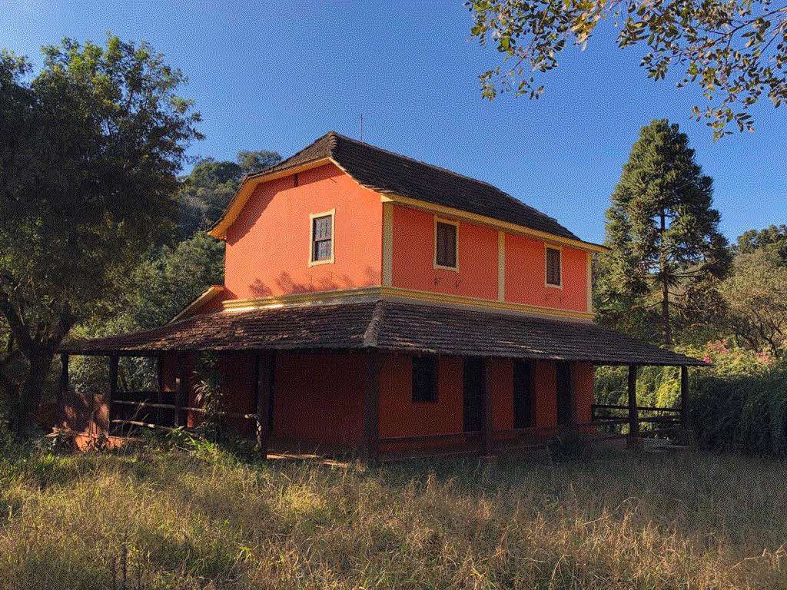
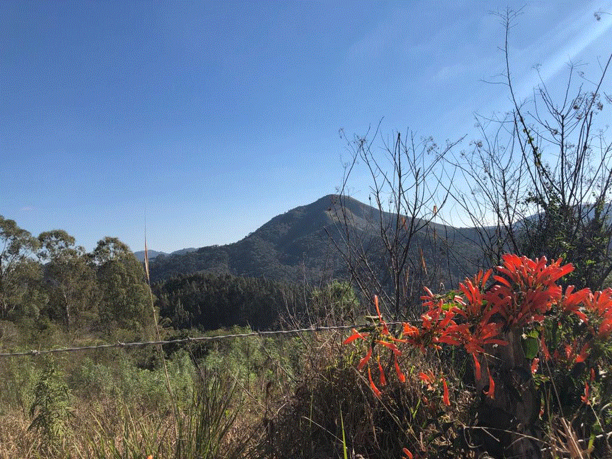

|
|
Bem-vindo ao site de Campo Magro! Nesse site serão apresentadas curiosidades e informações sobre a cidade, seja da sua história, de suas estatísticas físicas, dicas (de hospedagens, restaurantes e passeios) e também as inovações! Obrigada por visitar :)
• A origem do nome da cidade vem da época em que os tropeiros demandavam pela região e, no inverno, o gado emagrecia e sobrava pouco pasto verde para os animais, parecendo um campo minguado/magro. • Campo Magro é um município brasileiro do estado do Paraná. Sua população em 2010 era de 24 843 habitantes. • O município foi elevado à categoria de cidade no dia 28 de dezembro de 1995, sendo desmembrada de Almirante Tamandaré. • Montanhas e árvores constituem um belo cenário em Campo Magro. O ponto mais procurado é o Morro da Palha com 1.190 m de altitude. • Devido ao rico potencial hídrico, Campo Magro possui em seu território parte de duas unidades de conservação, a APA (Área de Proteção Ambiental) do Rio Passaúna e a UTP (Unidade Territorial de Planejamento) do Rio Verde, que determinam uma grande preocupação em conservar o Meio Ambiente em um remanescente da natureza nas proximidades de Curitiba, a capital do Estado. Dessa abundância de matas surgiu a denominação "Verde Que Te Quero Verde". • Mais de 90 % da área do município é formada por área de mananciais, sendo que os Royalties de preservação são a principal fonte de renda do município. • A história de Campo Magro e sua colonização são percebidas pelos casarios espalhados, predominantemente com características polonesas e italianas. |
 |
 |
Como chegar até o Campo Magro?O principal acesso rodoviário é a Estrada do Cerne. Para quem vai de São Paulo ou do Sul do País, a indicação é pegar o Contorno Norte. Quem sai de Curitiba, o acesso principal é a Avenida Manoel Ribas. O acesso aéreo mais próximo é o Aeroporto Afonso Pena, em São José dos Pinhais. |